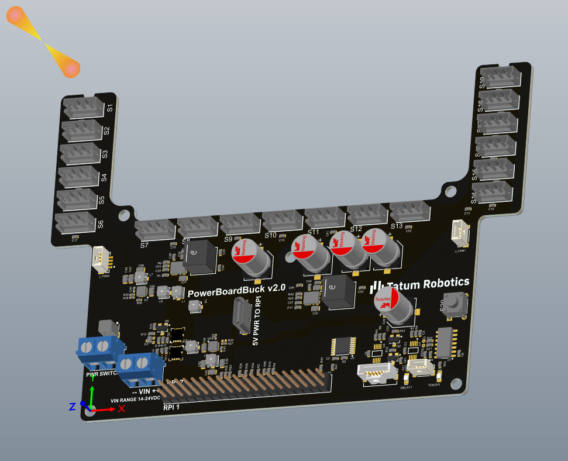
TatumT1 Assistive Touch Hand - Co-op
Designed and built multiple PCBs which includes the robot’s power board, RGB lighting board, and button interface for deafblind users, also developing and testing the accompanying software.
I build things at the intersection of hardware and software - embedded systems, firmware, electronics, and PCB Design. 💻 Here's a selection of my work and what I'm up to!!! 😁
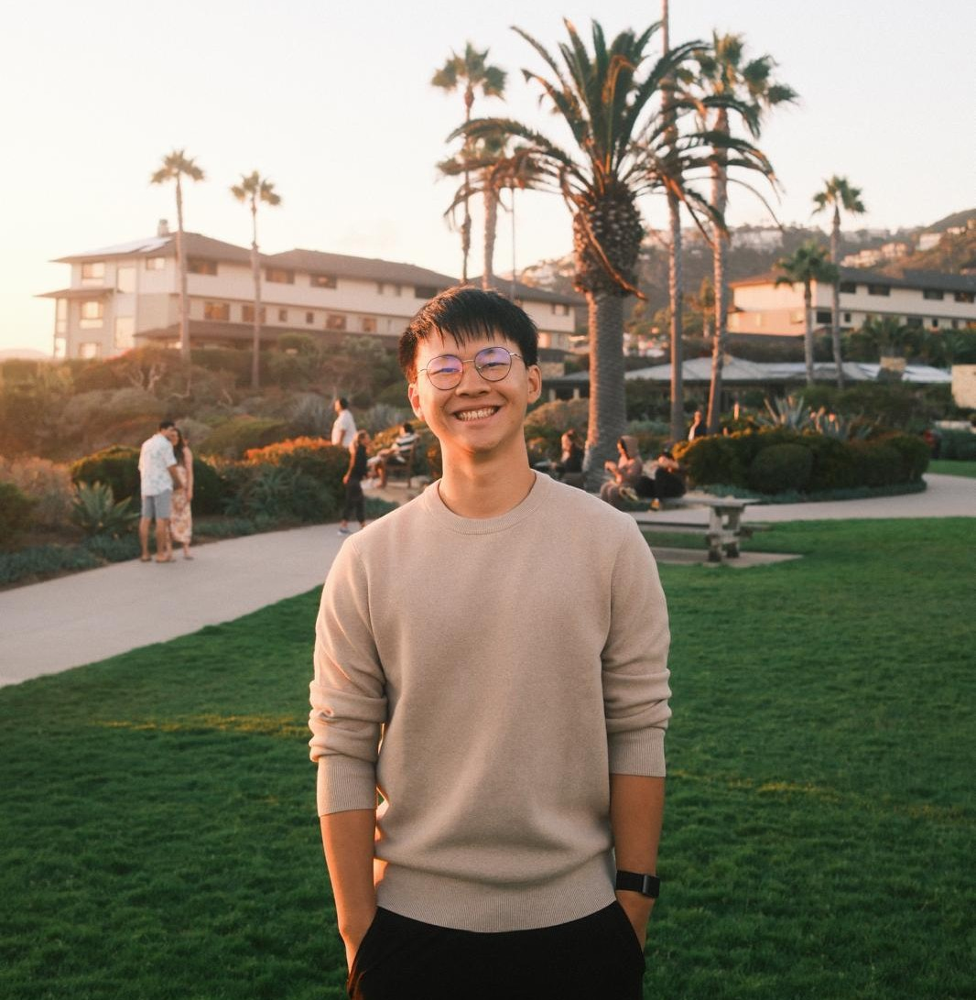
Next up… a little gallery of fun, cool builds I’m proud of from my college years!!! 🚀

Designed and built multiple PCBs which includes the robot’s power board, RGB lighting board, and button interface for deafblind users, also developing and testing the accompanying software.
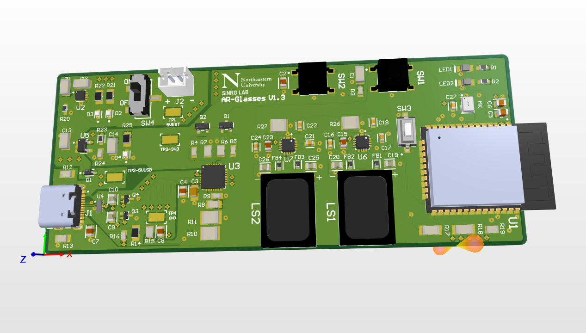
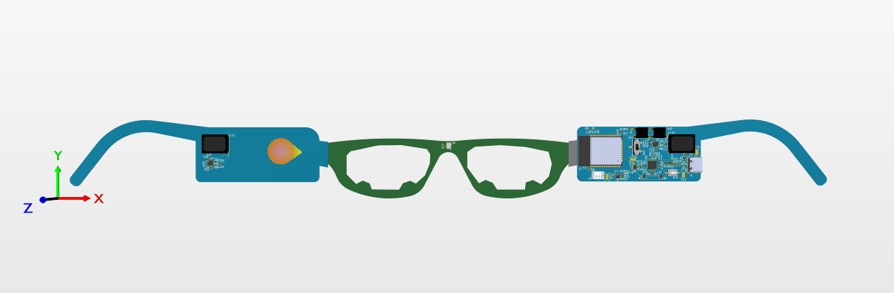
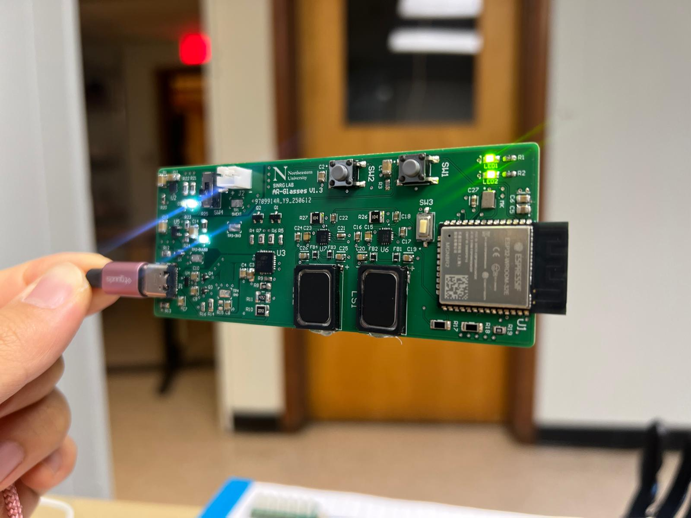
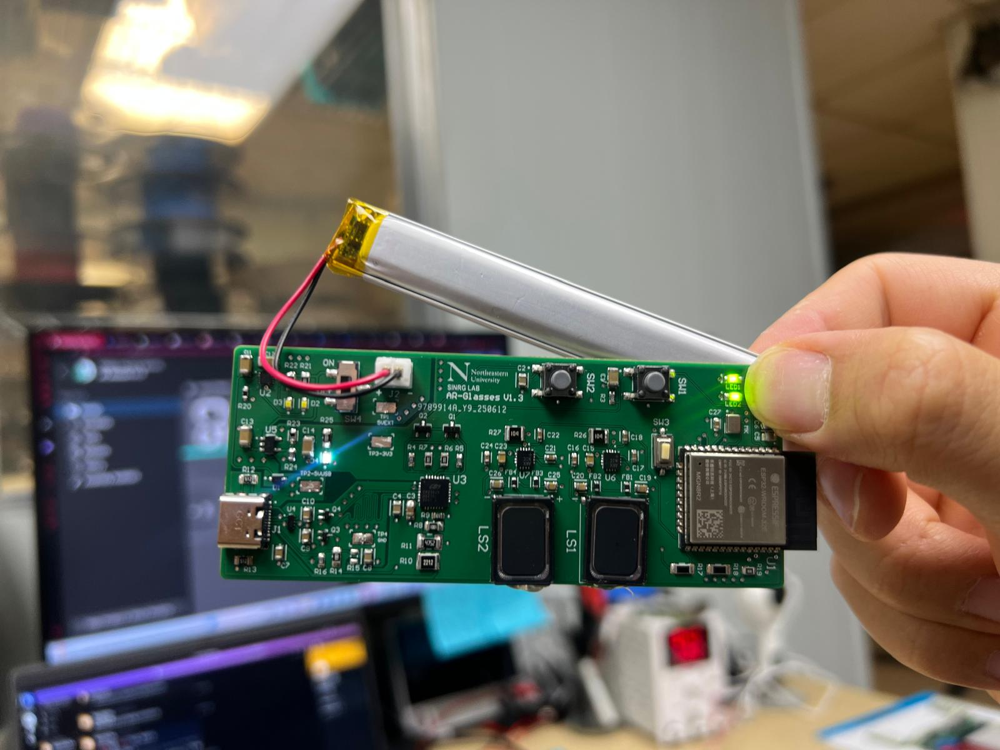
Custom board with LDO, USB-UART, dual amps for speakers, ICS-43434 mic, and on-board charger circuit. Designed in Altium, assembled and currently being tested and adding extra features for the glasses.
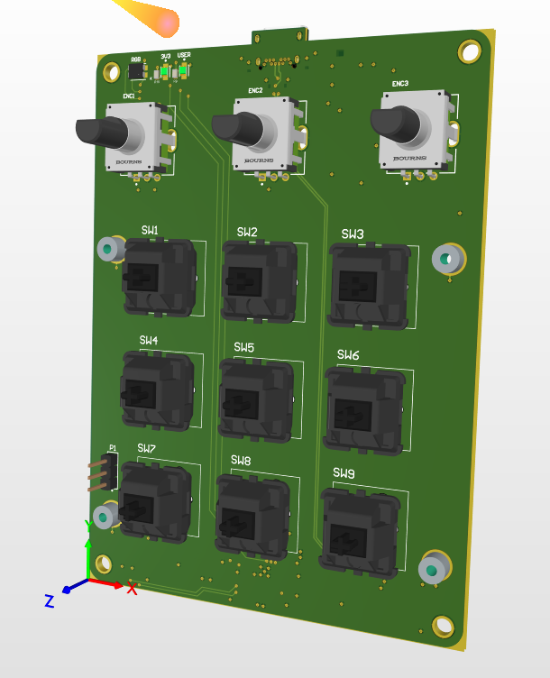
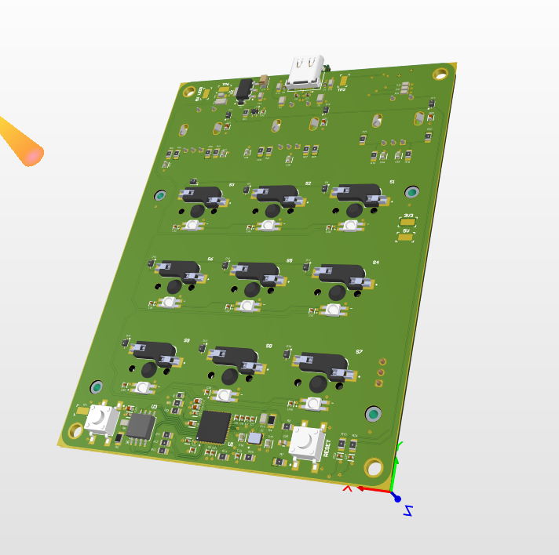
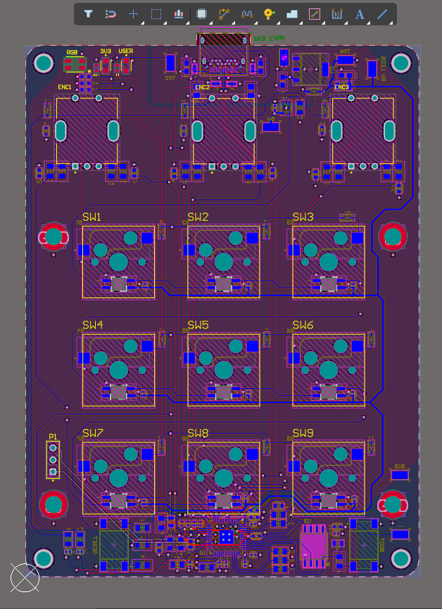
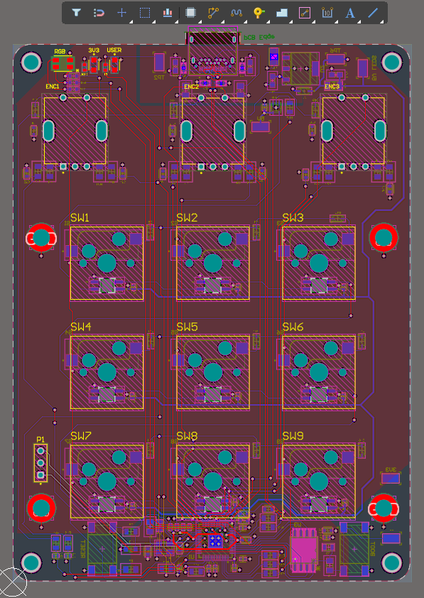
Designed and built a custom 4-layer mechanical macro pad PCB in Altium Designer, from schematic to layout and routing, integrating features like fill zones and EMI reduction for improved performance

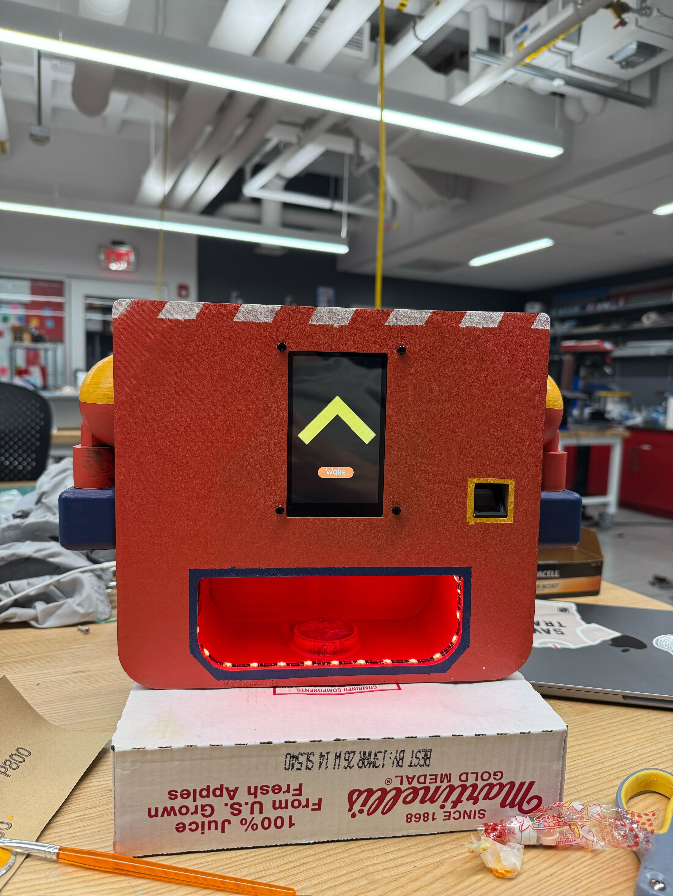
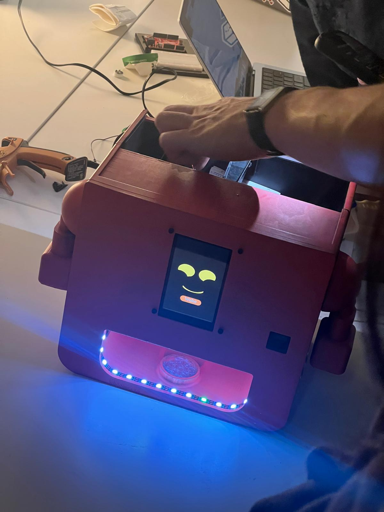
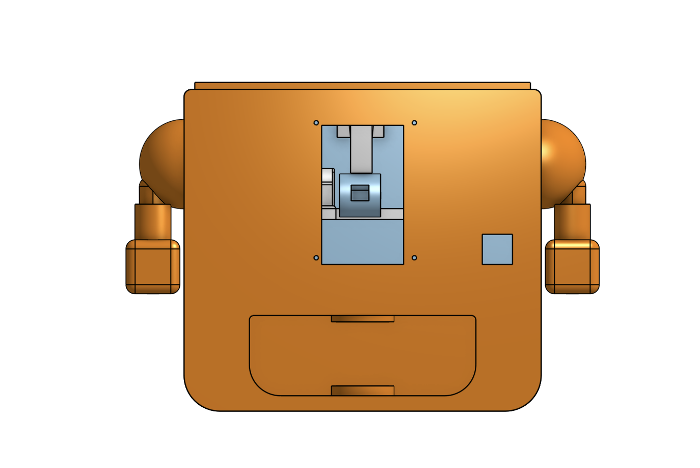
I worked on a compact, kid-friendly medication reminder robot with a touchscreen that makes taking medicine more fun and easy. I set up a fingerprint sensor with C++ on an Arduino Mega so it only dispenses pills securely and on schedule, and I also helped with the electronics and LED interaction design.


Created in Python a fully functional Pokémon combat game where users can select from three different Pokémon to battle against a randomly chosen opponent. Also incorporated Object Oriented Programming and PokeAPI, background music and sound effects to enrich overall gameplay, alongside intuitive UI design and user-friendly experience.


Designed the CAD model for an automated pasta machine as part of the Forge Fall 2023 Product Development Team. We utilized laser cutting, 3D printing to build the entire product. The device is a home appliance that functions similarly to a coffee machine, allowing users to select the type of pasta and cooking duration, making it convenient and an user-friendly solution for cooking pasta at home.


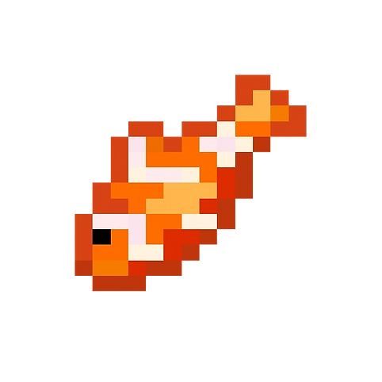

Created in Java with Object Oriented Programming some mini arcade games. For example Feeding Frenzy, 15Puzzle, Bridgit and Tetris.

Created in HTML and saved on Github :D
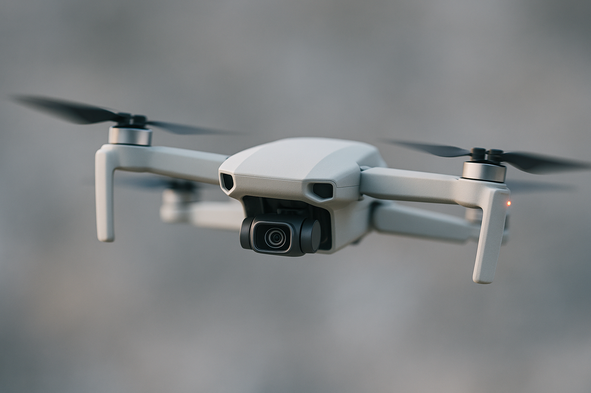
WIP 🚧🏗️🛠️👷
Roles, internships, and highlights. 💼⚡
I designed and tested PCBs in Altium Designer for the TatumT1 Assistive Touch Hand, including power and button boards, plus a custom RGB lighting system that improved feedback and helped achieve a 100% prototype pass rate. I migrated PWM control to gpiod on the Raspberry Pi 5, programmed in Python and C#, integrated I2C devices, and optimized hardware–software interaction for an 80% faster response. I also helped assemble the robot and ran electrical tests with a multimeter and oscilloscope, catching 95% of faults before final testing.
I helped develop a prototype AI glasses system by designing custom 4-layer PCBs in Altium Designer, working on schematics and circuits for power regulation and ESP32 interfaces, and using EMI reduction techniques to improve reliability. I also evaluated hardware needs, optimized component layouts for wearable integration, and supported sensor integration for real-time AI features.
Boosted algorithm performance by implementing parallel computing with Pthreads in C++, improving data synchronization and cutting runtime for large datasets by ~80%. Used the Discovery Cluster for high-performance computing, writing Slurm scripts to allocate GPU resources and benchmark precision calculations. Developed GPU-accelerated matrix multiplication in CUDA C++, achieving up to 1000× speedups over CPU methods, and optimized multi-threaded CPU tasks with OpenMP.
Helped international students adapt to American university life by serving as a liaison with the university, organizing engagement events, and leading orientation programs. Collected and managed student information, maintained records, and facilitated group discussions and community activities.
A quick look at who I am, what I do, and what drives my work.
I’m a 4th Year Computer Engineering undergraduate student with a passion for creating innovative solutions that bridge the gap between hardware and software. Overall, my work spans embedded systems, PCB design, and electronics.
Outside of engineering, I’m an explorer at heart — I love walking around and discovering new places. Indoors, you’ll find me playing guitar, reading, staying active, building Gundam plastic models (GUNPLA), tinkering with PCs, and geeking out over mechanical keyboards (I’ve built four custom ones so far).
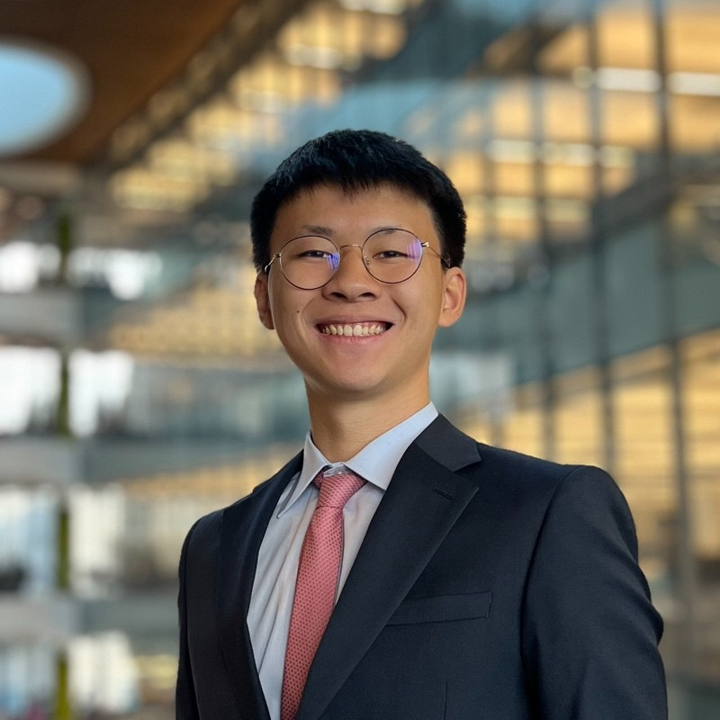
Want to collaborate or chat? Drop a note.